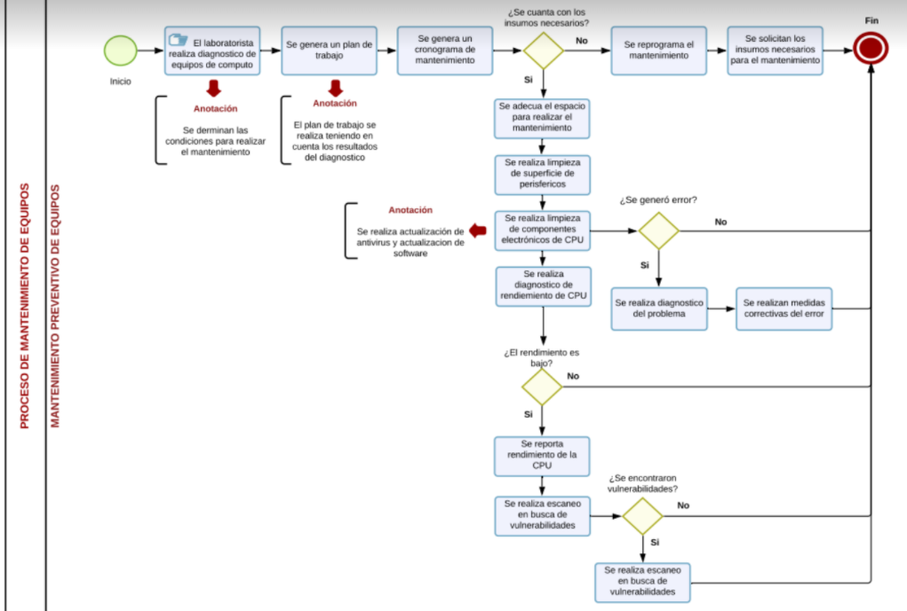
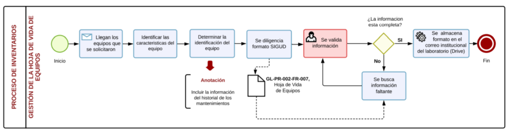

Creacion de cursos y usuarios
Generación de material de apoyo para uso de plataforma moodle
Generación de respaldos (backups) cursos plataforma moodle
Atención y asesorías a usuarios plataforma moodle
Evaluación del estado físico del laboratorio
Gestión de máquinas virtuales
Gestión de plataformas
Gestión de licencias

Gestion de almacenamiento de información
Evaluación del estado de los elementos del laboratorio
Garantias de equipos que requieran mantenimiento
Mantenimiento preventivo de equipos

Mantenimiento correctivo equipos de computo
PRÉSTAMO DE EQUIPOS PARA PRÁCTICA LIBRE
PRÉSTAMO DE EQUIPOS EXTERNOS A LA FACULTAD
PRÉSTAMO DE EQIUPOS PARA PRÁCTICA DOCENTE
PRÉSTAMO DE ESPACIOS A ENTIDADES EXTERNAS
PRÉSTAMO DE ESPACIOS EN SALA
ALMACENAMIENTO DE OBJETOS PERDIDOS
ENTREGA DE OBJETOS PERDIDOS
REPORTE DE HURTO
Generacion de paz y salvos
Generación de respuestas a derechos de petición
Generación de respuestas a sugerencias quejas y/o reclamos
Elaboración y control de seguimientos SIGUD
Gestión de la hoja de vida de equipos

Daños presentados en los equipos de laboratorio

levantamiento de inventario
Baja de equipos en el inventario
Traslado de equipos de inventario
Generación re reportes a control interno
Generación de reportes a entes de control (Auditoria con Universidad del Valle)
Generacion de reportes trimestrales y anuales
Proceso de adquisición de equipos y elementos para el laboratorio
Asistencia del laboratorio a eventos de la universidad
Formulación del plan maestro
Necesidad de contratación
contratación y pago
Documentación para la contratación de laboratoristas
Monitoria académica
Soporte técnico para la página web el laboratorio de informática

Actualización de la página web del laboratorio de informática
Soporte tenológico para el apoyo al portal web de virtualidad para la facultad tecnológica
Realización de notas para la página web